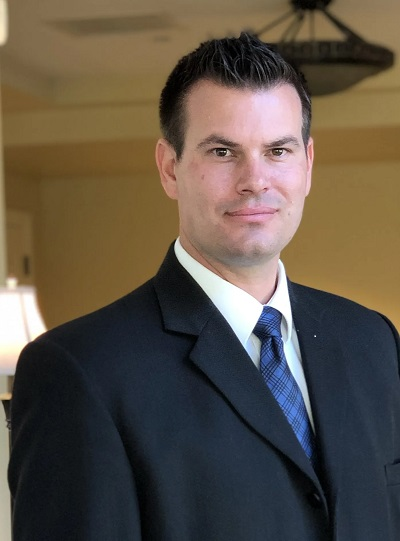
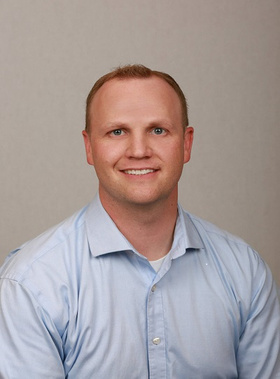

Audience
The audience will be small and large business owners, entrepreneurs, investors, and community members. Being a part of the chamber of commerce will allow for business members and community members to meet, form connections, and to exchange ideas. This allows for businesses to increase their visibility and credibility in their community, create networking opportunities, and promote customer referrals. Community members will benefit from community festivals and events, sponsorships, charitable donations, discounts, and employments opportunities.
Personas
David Milius
Funeral Directors at the Russon Mortuary and Crematory
David Milius as a young man witnessed an embalmer show kindness and compassion to a close family friend when they had lost a loved one. This act of stayed with David and peaked his interest. He attended mortuary school and graduated from Cypress College in Southern California.
Russon mortuary and crematory was founded in 1955. It is a family operated business whose members appreciate being involved in the community, and tries to give back by sponsoring sports, theatre, and other programs at Syracuse High School.
"To be able to take care of someone in their time of need is a very fulfilling and rewarding way to give back to the community"
David Milius benefits being a member of the Chamber of Commerce by his involvement in the community and his building of relationships with local businesses owners. Through his involvment and contributions from Russon Mortuary and Crematory, Russon Mortuary and Cremation will become a name the communuity trusts making Russon's a household name community members will remember as they become aware of the services they provide.
Dr. Brett Burtenshaw
Physician at Tanner Clinic
Dr Brett Burtenshaw has always wanted to be a physician ever since he was a child. He was inspired to become a physician by his father who was a science teacher, and his mother who worked in a doctor's office, where he was able to spend lots of time shadowing doctors.
Tanner Clinics are physician owned which allows Dr.Burtenshaw to be in charge of his own practice.
"My Favorite thing about doctoring in Northern Utah are "the relationships we make with people we've taken care of over over the last seven years."
Dr. Brett Burtenshaw benefits by being involved in the community, taking shifts at Syracuse High School football games and at Davis County Free Clinic in Clearfield, Utah, and in so doing this allows him to become a face everyone in the community will know, remember and trust. He is also able to build relationships with other business owners and physicians that could open up opportunities for his business.